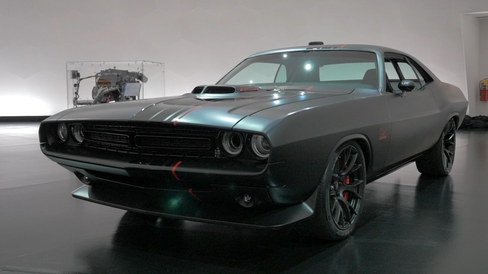
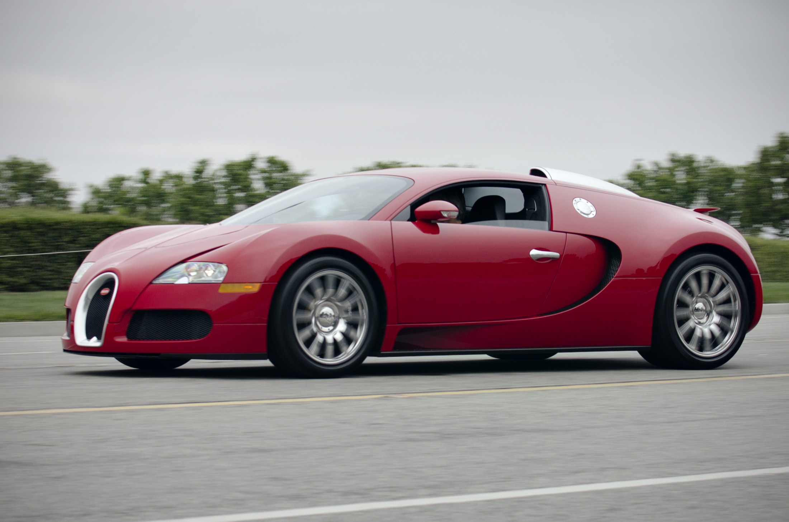

Welcome To My World
Hey what did I chose car?
I am a big fan of a Chalenger and also different type of fast car from a movie Fast and Furious
Basically having a chance to drive whatever old fast and new car to me was a best experience of my life. A chalenger is one of my favorite that I didn't having a chance to driving yet. However, here some inforfamtions about that carsDodge_Challenger
Bugatti Veyron Super Sport EB 16.4 mid-engine sports car, designed and developed in Germany by the Volkswagen Group and manufactured in Molsheim, France, by French automobile manufacturer Bugatti. It was named after the racing driver Pierre Veyron.
Hennesy Venom GT set a Guinness World Record for the fastest road legal car from 0–186 mph (0–300 km/h) with an average acceleration time of 13.63 seconds.[2] In addition, the car set an unofficial record for 0–200 mph (0–322 km/h) acceleration at 14.51 seconds, beating the Koenigsegg Agera R's time of 17.68 seconds, making it the unofficial fastest accelerating road legal car in the world.

KOENIGSEGG AGERA R is a mid-engined sports car produced by Swedish car manufacturer Koenigsegg. It is a successor to the CCX/CCXR. The name comes from the Swedish verb 'agera' which means "to act" or in imperative form "(You) act!".It was named Hypercar of the Year in 2010 by Top Gear magazine.

Jeff Gordon (born August 4, 1971) is an American former professional stock car racing driver, currently an announcer for Fox NASCAR, and a top executive for Hendrick Motorsports. He formerly drove the No. 24 Chevrolet for Hendrick Motorsports in 23 full-time NASCAR Sprint Cup Series seasons between 1993 and 2015, and served as a substitute driver for Dale Earnhardt Jr. in the No. 88 Hendrick Motorsports Chevrolet in select races during the 2016 season.

Lewis Hamilton (born 7 January 1985) is a British racing driver who races in Formula One for Mercedes-AMG Petronas Motorsport. A five-time Formula One World Champion, he is often considered the best driver of his generation and widely regarded as one of the greatest drivers in the history of the sport.

Michael Schumacher born 3 January 1969) is a retired German racing driver who raced in Formula One for Jordan Grand Prix, Benetton and Ferrari, where he spent most of his career, as well as for Mercedes upon his return to the sport. Widely regarded as one of the greatest Formula One drivers ever,[1][2][3][4] and regarded by some as the greatest of all time,[5][6] Schumacher is the only driver in history to win seven Formula One World Championships, five of which he won consecutively.